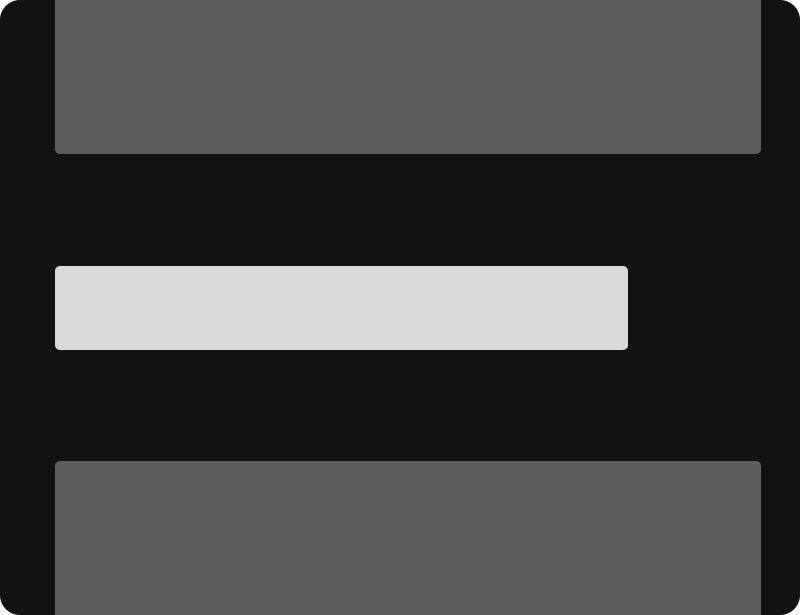
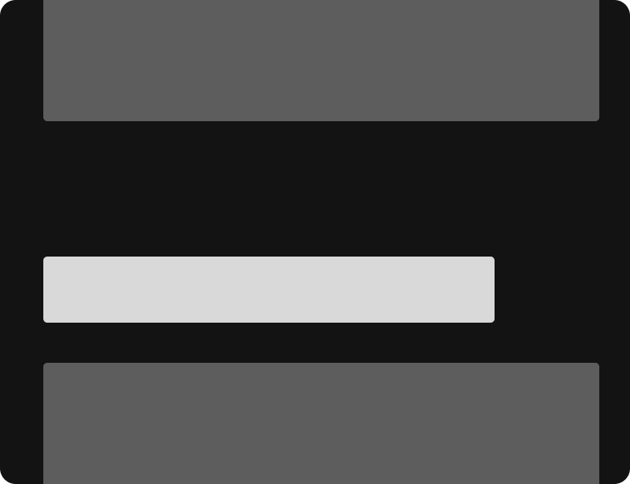

Espaço negativo na tipografia
Espaço negativo na tipografia tem que ser feito com muita atenção. Os títulos são lidos sempre primeiros e geralmente são maiores em relação ao texto que acompanha.
Na imagem abaixo, o título parece fazer parte igualmente dos dois parágrafos, o de cima e o de baixo.

Mudando a distância do parágrafo de cima, ficou mais claro a qual seção ele pertence.

O mesmo vale para quando o layout for mais complexo:
Aumentando o espaço da sidebar, fica mais claro que ela é separada da seção do lado.
O espaço negativo ajuda muito a guiar o olho do usuário pelo conteúdo e garantir que a mensagem certa seja transmitida.